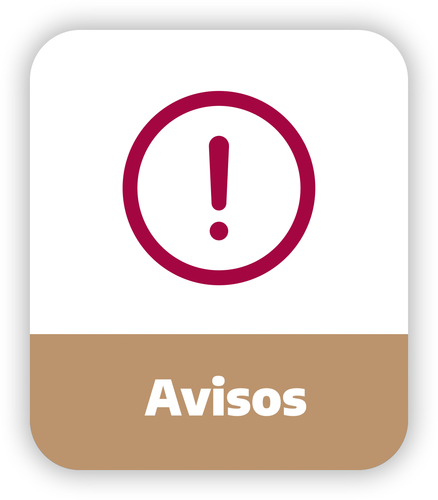

<ion-header>
  <ion-toolbar>
    <ion-buttons slot="end">
      <ion-menu-button auto-hide="false"></ion-menu-button>
    </ion-buttons>
    <ion-title>¡Bienvenido!</ion-title>
  </ion-toolbar>
</ion-header>

<ion-content [fullscreen]="true">
  
  
  <ion-grid style="display: flex; width: 90%;">
    <ion-row>
      <ion-col button (click)="fucn_goTo('tab2')">
        
      </ion-col>
      <ion-col button (click)="fucn_goTo('tab3')">
        
      </ion-col>
    </ion-row>
  </ion-grid>

  <div style="width: 85%; margin:auto;">
    <h4 style="color: #A1193E; font-weight: bold;">Tu semana...</h4>
    <div style="background-color: #BC936C; color: white; padding: 2px; border-radius: 20px;">
      <p style="margin-left: 15px; margin-right: 15px; font-size: 15px;"><span style="font-weight: bolder;">14 Marzo</span> - Pago de la primer quincena</p>
    </div>
  </div>

  <ion-button style="display: flex; margin: auto; width: 50%; margin-top: 10px; margin-bottom: 10px;" (click)="func_forceTopic()">FORZAR TÓPICO</ion-button>

  <!--
    [autoplay]="true"
    [keyboard]="true"
    [pagination]="true"
    [scrollbar]="true"
    [zoom]="true"
  -->
    <swiper class="swiper-container" [pagination]="true">
    <ng-template swiperSlide>
      
    </ng-template>
    <ng-template swiperSlide>
      
    </ng-template>
    <ng-template swiperSlide>
      
    </ng-template>
  </swiper>
</ion-content>